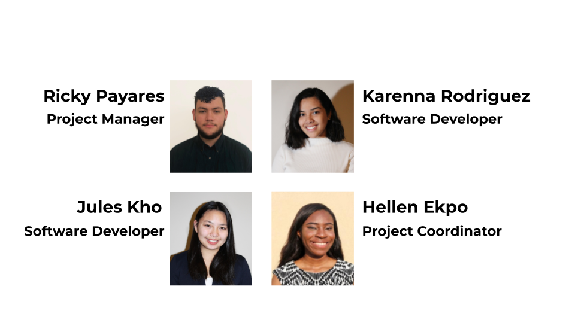

During my freshman year at NYU, I spearheaded a semester-long project focused on addressing the challenge of creating a real-time visual sign language interpreter. The primary objective was to devise an innovative solution to a prevalent issue and develop a prototype product or software to address it. Our team approached the problem by employing computer vision techniques and crafting a prototype involving a golfing glove adorned with colored stickers on the fingers, complemented by a 3D-printed controller.
To realize our vision, we implemented the project using Python and harnessed the capabilities of a computer vision library. The software was designed to initially identify specific colors, then track their positions in three-dimensional space, and finally calculate the relative distances between colors to define hand positions for sign language gestures. The minimum viable product (MVP) we achieved encompassed defining static signs in the alphabet, including essential phrases such as "I love you." To gain insights into our project's intricacies, you can view the team's presentation [here](insert link). All rights owned by NYU Tandon School of Engineering.
Authors:
